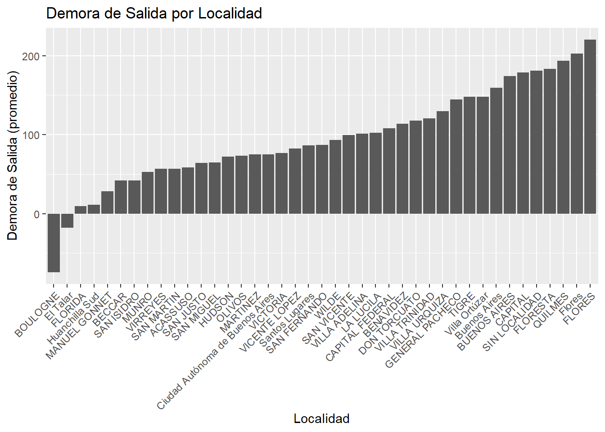
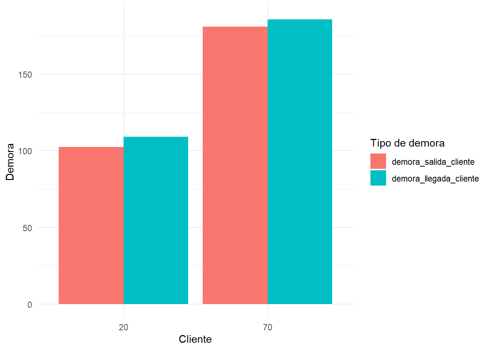
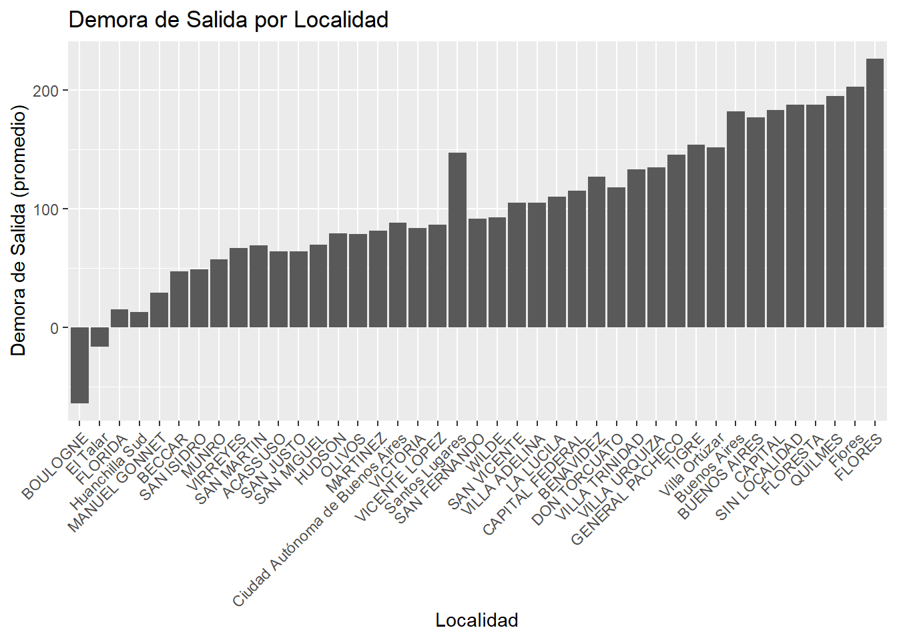

library(leaflet)
library(tidyverse)
library(readxl)
library(lubridate)
library(kableExtra)
library(GGally)
library(corrplot)
library(ggplot2)
library(dplyr)
library(gridExtra)
library(osmdata)
library(sf)
library(ggmap)
library(MASS)Iflow
Librerías
Cargar Datos
df <- read_excel("iFlowDatos.xlsx")
df# A tibble: 27,484 × 16
iddomicilioorden direccion localidad InicioHorario1 FinHorario1 latitud
<dbl> <chr> <chr> <dbl> <dbl> <dbl>
1 74956 VIDAL 2044 CAPITAL 901 1401 -34.6
2 74956 VIDAL 2044 CAPITAL 901 1401 -34.6
3 74956 VIDAL 2044 CAPITAL 901 1401 -34.6
4 74956 VIDAL 2044 CAPITAL 901 1401 -34.6
5 74956 VIDAL 2044 CAPITAL 901 1401 -34.6
6 74956 VIDAL 2044 CAPITAL 901 1401 -34.6
7 74956 VIDAL 2044 CAPITAL 901 1401 -34.6
8 74956 VIDAL 2044 CAPITAL 901 1401 -34.6
9 74958 M PEDRAZA 2370 CAPITAL 901 1401 -34.6
10 74958 M PEDRAZA 2370 CAPITAL 901 1401 -34.6
# ℹ 27,474 more rows
# ℹ 10 more variables: longitud <dbl>, cliente <dbl>, mes <dbl>, Bultos <dbl>,
# Peso <dbl>, Unidades <dbl>, InicioVisitaPlanificado <chr>,
# FinVisitaPlanificado <chr>, InicioVisitaReal <chr>, FinVisitaReal <chr>Limpieza de los Datos
df_clean <- df %>%
filter(latitud<(-34),longitud<(-58)) %>%
mutate(inicio = parse_date_time(InicioVisitaReal, orders = c("ymd HMS", "ymd_HMS", "dmy HMS"), tz = Sys.timezone(), quiet = TRUE)) %>% na.omit()%>%
mutate(cliente = as.factor(cliente))
names(df_clean) <- tolower(names(df_clean))
df_clean# A tibble: 27,382 × 17
iddomicilioorden direccion localidad iniciohorario1 finhorario1 latitud
<dbl> <chr> <chr> <dbl> <dbl> <dbl>
1 74956 VIDAL 2044 CAPITAL 901 1401 -34.6
2 74956 VIDAL 2044 CAPITAL 901 1401 -34.6
3 74956 VIDAL 2044 CAPITAL 901 1401 -34.6
4 74956 VIDAL 2044 CAPITAL 901 1401 -34.6
5 74956 VIDAL 2044 CAPITAL 901 1401 -34.6
6 74956 VIDAL 2044 CAPITAL 901 1401 -34.6
7 74956 VIDAL 2044 CAPITAL 901 1401 -34.6
8 74956 VIDAL 2044 CAPITAL 901 1401 -34.6
9 74958 M PEDRAZA 2370 CAPITAL 901 1401 -34.6
10 74958 M PEDRAZA 2370 CAPITAL 901 1401 -34.6
# ℹ 27,372 more rows
# ℹ 11 more variables: longitud <dbl>, cliente <fct>, mes <dbl>, bultos <dbl>,
# peso <dbl>, unidades <dbl>, iniciovisitaplanificado <chr>,
# finvisitaplanificado <chr>, iniciovisitareal <chr>, finvisitareal <chr>,
# inicio <dttm>colSums(is.na(df_clean)) iddomicilioorden direccion localidad
0 0 0
iniciohorario1 finhorario1 latitud
0 0 0
longitud cliente mes
0 0 0
bultos peso unidades
0 0 0
iniciovisitaplanificado finvisitaplanificado iniciovisitareal
0 0 0
finvisitareal inicio
0 0 dim(df_clean)[1] 27382 17Análisis de Datos Básico
summary(df_clean) iddomicilioorden direccion localidad iniciohorario1
Min. : 74956 Length:27382 Length:27382 Min. : 0
1st Qu.: 77460 Class :character Class :character 1st Qu.:901
Median : 82348 Mode :character Mode :character Median :901
Mean :101622 Mean :901
3rd Qu.:121664 3rd Qu.:901
Max. :183277 Max. :901
finhorario1 latitud longitud cliente mes
Min. :1400 Min. :-34.85 Min. :-58.73 20:16510 Min. :5.000
1st Qu.:1401 1st Qu.:-34.62 1st Qu.:-58.48 70:10872 1st Qu.:5.000
Median :1401 Median :-34.60 Median :-58.44 Median :6.000
Mean :1401 Mean :-34.60 Mean :-58.44 Mean :6.021
3rd Qu.:1401 3rd Qu.:-34.58 3rd Qu.:-58.40 3rd Qu.:7.000
Max. :2359 Max. :-34.39 Max. :-58.15 Max. :7.000
bultos peso unidades iniciovisitaplanificado
Min. : 0.100 Min. : 0.00 Min. : 1.00 Length:27382
1st Qu.: 2.000 1st Qu.: 13.00 1st Qu.: 2.00 Class :character
Median : 3.000 Median : 20.94 Median : 6.00 Mode :character
Mean : 5.692 Mean : 40.95 Mean : 28.37
3rd Qu.: 6.000 3rd Qu.: 39.00 3rd Qu.: 40.00
Max. :360.000 Max. :2475.00 Max. :2203.00
finvisitaplanificado iniciovisitareal finvisitareal
Length:27382 Length:27382 Length:27382
Class :character Class :character Class :character
Mode :character Mode :character Mode :character
inicio
Min. :2024-05-03 07:17:51.00
1st Qu.:2024-05-24 15:38:00.00
Median :2024-06-18 10:34:53.00
Mean :2024-06-17 22:15:43.75
3rd Qu.:2024-07-11 11:21:32.00
Max. :2024-08-06 16:57:00.00 Distintas Variables
colnames(df_clean) [1] "iddomicilioorden" "direccion"
[3] "localidad" "iniciohorario1"
[5] "finhorario1" "latitud"
[7] "longitud" "cliente"
[9] "mes" "bultos"
[11] "peso" "unidades"
[13] "iniciovisitaplanificado" "finvisitaplanificado"
[15] "iniciovisitareal" "finvisitareal"
[17] "inicio" sapply(df_clean, class)$iddomicilioorden
[1] "numeric"
$direccion
[1] "character"
$localidad
[1] "character"
$iniciohorario1
[1] "numeric"
$finhorario1
[1] "numeric"
$latitud
[1] "numeric"
$longitud
[1] "numeric"
$cliente
[1] "factor"
$mes
[1] "numeric"
$bultos
[1] "numeric"
$peso
[1] "numeric"
$unidades
[1] "numeric"
$iniciovisitaplanificado
[1] "character"
$finvisitaplanificado
[1] "character"
$iniciovisitareal
[1] "character"
$finvisitareal
[1] "character"
$inicio
[1] "POSIXct" "POSIXt" Cambiar las variables, para que las que tengan que estar en formato fecha, lo estén
df_clean$iniciovisitareal <- as.POSIXct(df_clean$iniciovisitareal, format="%Y-%m-%d %H:%M:%OS")
df_clean$finvisitareal <- as.POSIXct(df_clean$finvisitareal, format="%Y-%m-%d %H:%M:%OS")
df_clean$iniciovisitaplanificado <- as.POSIXct(df_clean$iniciovisitaplanificado, format="%Y-%m-%d %H:%M:%OS")
df_clean$finvisitaplanificado <- as.POSIXct(df_clean$finvisitaplanificado, format="%Y-%m-%d %H:%M:%OS")
df_clean <- df_clean %>%
mutate(
duracion_visita = difftime(df_clean$finvisitareal, df_clean$iniciovisitareal, units = "mins"))# Ó HAGO
df_clean$iniciovisitaplanificado <- as.POSIXct(df_clean$iniciovisitaplanificado, format = "%Y-%m-%d %H:%M:%OS", tz = "UTC")
df_clean$finvisitaplanificado <- as.POSIXct(df_clean$finvisitaplanificado, format = "%Y-%m-%d %H:%M:%OS", tz = "UTC")
df_clean$iniciovisitareal <- as.POSIXct(df_clean$iniciovisitareal, format = "%Y-%m-%d %H:%M:%OS", tz = "UTC")
df_clean$finvisitareal <- as.POSIXct(df_clean$finvisitareal, format = "%Y-%m-%d %H:%M:%OS", tz = "UTC")
df_clean# A tibble: 27,382 × 18
iddomicilioorden direccion localidad iniciohorario1 finhorario1 latitud
<dbl> <chr> <chr> <dbl> <dbl> <dbl>
1 74956 VIDAL 2044 CAPITAL 901 1401 -34.6
2 74956 VIDAL 2044 CAPITAL 901 1401 -34.6
3 74956 VIDAL 2044 CAPITAL 901 1401 -34.6
4 74956 VIDAL 2044 CAPITAL 901 1401 -34.6
5 74956 VIDAL 2044 CAPITAL 901 1401 -34.6
6 74956 VIDAL 2044 CAPITAL 901 1401 -34.6
7 74956 VIDAL 2044 CAPITAL 901 1401 -34.6
8 74956 VIDAL 2044 CAPITAL 901 1401 -34.6
9 74958 M PEDRAZA 2370 CAPITAL 901 1401 -34.6
10 74958 M PEDRAZA 2370 CAPITAL 901 1401 -34.6
# ℹ 27,372 more rows
# ℹ 12 more variables: longitud <dbl>, cliente <fct>, mes <dbl>, bultos <dbl>,
# peso <dbl>, unidades <dbl>, iniciovisitaplanificado <dttm>,
# finvisitaplanificado <dttm>, iniciovisitareal <dttm>, finvisitareal <dttm>,
# inicio <dttm>, duracion_visita <drtn>colnames(df_clean) [1] "iddomicilioorden" "direccion"
[3] "localidad" "iniciohorario1"
[5] "finhorario1" "latitud"
[7] "longitud" "cliente"
[9] "mes" "bultos"
[11] "peso" "unidades"
[13] "iniciovisitaplanificado" "finvisitaplanificado"
[15] "iniciovisitareal" "finvisitareal"
[17] "inicio" "duracion_visita" sapply(df_clean, class)$iddomicilioorden
[1] "numeric"
$direccion
[1] "character"
$localidad
[1] "character"
$iniciohorario1
[1] "numeric"
$finhorario1
[1] "numeric"
$latitud
[1] "numeric"
$longitud
[1] "numeric"
$cliente
[1] "factor"
$mes
[1] "numeric"
$bultos
[1] "numeric"
$peso
[1] "numeric"
$unidades
[1] "numeric"
$iniciovisitaplanificado
[1] "POSIXct" "POSIXt"
$finvisitaplanificado
[1] "POSIXct" "POSIXt"
$iniciovisitareal
[1] "POSIXct" "POSIXt"
$finvisitareal
[1] "POSIXct" "POSIXt"
$inicio
[1] "POSIXct" "POSIXt"
$duracion_visita
[1] "difftime"Análisis
df_clean <- df_clean %>%
mutate(TiempoEntrega = finvisitareal - iniciovisitareal)Cantidad de entregas por localidad
df_counts <- df_clean %>%
group_by(localidad) %>%
summarise(conteo = n())%>%
arrange(desc(conteo))%>%
head(5)
ggplot(df_counts, aes(x = localidad, y =conteo)) +
geom_bar(stat = "identity") 
Calculamos el tiempo promedio de demora en la salida, y en la llegada
calcular_tiempo_formateado <- function(inicio, fin) {
# Calcula la diferencia en minutos con decimales
tiempo_minutos_dec <- as.numeric(difftime(fin, inicio, units = "mins"))
# Convierte el resultado a minutos enteros, ignorando los segundos
tiempo_minutos <- floor(tiempo_minutos_dec)
# Retorna el valor numérico
return(tiempo_minutos)
}
# Aplicar la función en el data frame sin crear columnas adicionales
df_clean <- df_clean %>%
mutate(DemoraSalida = calcular_tiempo_formateado(iniciovisitaplanificado, iniciovisitareal))%>%
mutate(DemoraLlegada = calcular_tiempo_formateado(finvisitaplanificado, finvisitareal))
promedio_demora_salida <- mean(df_clean$DemoraSalida,na.rm = TRUE)
promedio_demora_salida[1] 133.482promedio_demora_llegada <- mean(df_clean$DemoraLlegada,na.rm=TRUE)
promedio_demora_llegada[1] 139.4571Con lo calculado arriba, sacamos el tiempo promedio de demora en la salida y llegada, en las distintas localidades y graficamos
df_demora_por_localidad <- df_clean%>%
group_by(localidad) %>%
summarise(demora_salida_localidad=mean(DemoraSalida,na.rm = T),demora_llegada_localidad=mean(DemoraLlegada,na.rm = T)) %>%
arrange(demora_salida_localidad) %>%
filter(demora_salida_localidad < 3000) %>%
mutate(localidad = factor(localidad, levels = localidad))
ggplot(df_demora_por_localidad,aes(x=localidad,y=demora_salida_localidad)) +
geom_bar(stat="identity") +
labs(title = "Demora de Salida por Localidad",
x = "Localidad",
y = "Demora de Salida (promedio)") +
theme(axis.text.x = element_text(angle = 45, hjust = 1))
ggplot(df_demora_por_localidad,aes(x=localidad,y=demora_llegada_localidad))+
geom_bar(stat="identity")+
labs(title = "Demora de Salida por Localidad",
x = "Localidad",
y = "Demora de Salida (promedio)") +
theme(axis.text.x = element_text(angle = 45, hjust = 1))
Ahora calculamos la demora promedio por cliente
demora_promedio_por_cliente <- df_clean%>%
group_by(cliente) %>%
summarise(demora_salida_cliente=mean(DemoraSalida,na.rm=T),demora_llegada_cliente=mean(DemoraLlegada,na.rm=T))
demora_melt <- reshape2::melt(demora_promedio_por_cliente, id.vars = 'cliente')
# Crear el gráfico con ggplot2
ggplot(demora_melt, aes(x = factor(cliente), y = value, fill = variable)) +
geom_bar(stat = 'identity', position = 'dodge') +
labs(x = 'Cliente', y = 'Demora', fill = 'Tipo de demora') +
theme_minimal()Poner nuevos nombres a las variables
df_clean <- df_clean %>%
rename(
id_domicilio_orden = iddomicilioorden,
inicio_horario = iniciohorario1,
fin_horario = finhorario1,
inicio_visita_planificado = iniciovisitaplanificado,
fin_visita_planificado = finvisitaplanificado,
inicio_visita_real = iniciovisitareal,
fin_visita_real = finvisitareal
)